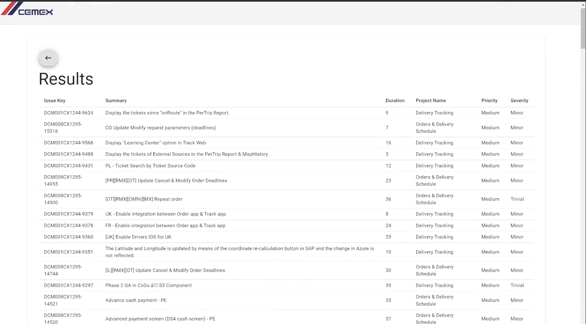
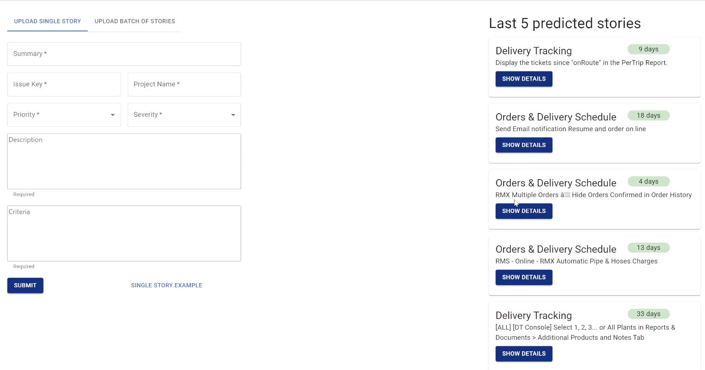
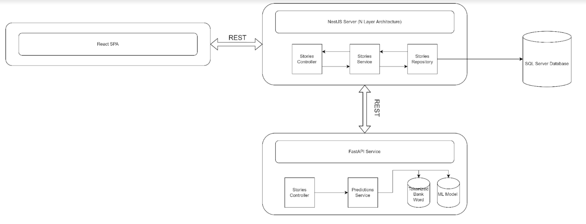
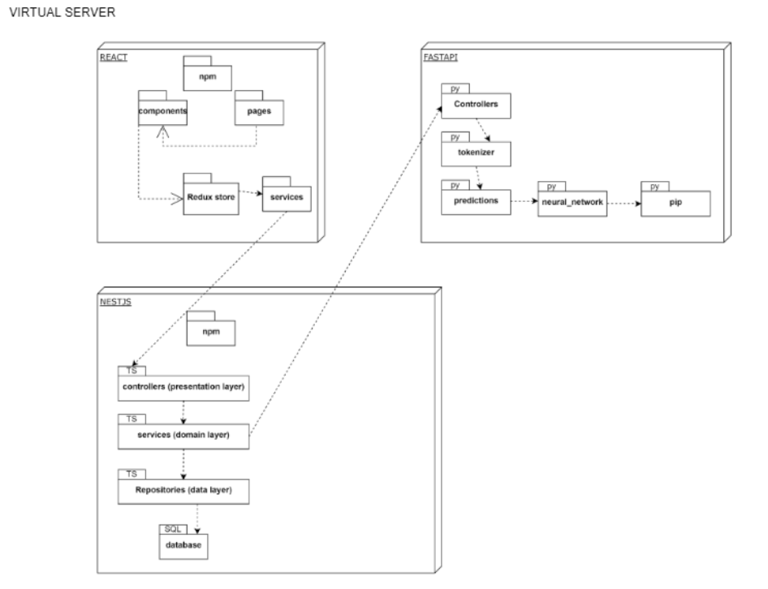

Overview
Based in JIRA stories used for the CEMEX Go platform, I was tasked to develop a Neural Network model to predict the effort for a given story or task: predict how much time would it take CEMEX employees to complete the task. For this we went for a Natural Language Processing and Machine Learning solution.
Tools
For the creation of this project, the tools that were mainly used were:
Python: tensorflow.python.keras for the development of the Multilayer Perceptron Neural Network
React.js: for the development of the client
Microsoft SQL Server: for the database
NestJS: server for API connecting database and client
FastAPI: server for state managment
Final Product
The Final Product is a React.js client with an interface to upload JIRA tasks single or in bulk (.xslx file). When a task is uploaded, the client makes a request with a Nest.js API for our tokenizer and trained Neural Network models, managed by a FastAPI server, in order to get a time prediction.
The developed Keras Neural Network is a Multilayer Perceptron (MLP). The process does Natural Language Processing (NLP) tokenizing the input text, and then runs the values through the model weights, predicting a numeric time output. This output is then returned by the API request and the user gets on his screen the resulting prediction of effort/time needed for every inputted task.
NLP Tokenizer
For NLP we had to tokenize the text from every input. For this we used Pandas, Tensorflow Keras for the Tokenizer() function, and nltk for preprocessing.
JIRA tasks included the fields: Priority, Severity, Summary and Description, all strings, which we tokenized before sending to the model.
All tokens are joined and, since we use MLP which requires inputs of a predetermined exact shape, we run post padding and post truncating of 0s functions, setting all input token arrays to the same size.
Neural Network (MLP)
For the Neural Network I used tensorflow.python.keras to create a MLP model with regression.
The Model
The model has one initial Masking layer with a mask value of 0 so that it can ignore any 0s that could have been generated in the pad_sequences function at the tokenizer. This initial layer takes an input shape of (35,).
The following N layers of the model are multiple Dense layers with relu activation (rectified linear unit). The amount of these layers and neurons in each is modified throughout the training of different saved models.
In some models we use Dropout layers with values ranging from 0.1 to 0.5 to prevent overfitting.
The last one is a Dense layer with a single neuron and linear activation, which is used for regression in the model.
The model uses the Adam optimizer from tensorflow keras, and uses the loss function of Mean Squared Error (MSE) as we seek to minimize the difference between our predictions and the actual results.
Training
For the training we first split the input (X) and output (Y) tokens into training and testing data, which is randomly splited as 70% training and 30% testing data.
We then create a new model and run model.fit with the training values, for a varying amount of epochs and a batch size of 32. We use the test values for validation..
Then we evaluate the model and we get the MSE, the Root MSE and the Mean Absolute Error (MSA), this with the train data and then with the test data to see the accuracy of the trained model and determine if we would work with it or not.
These steps are ran multiple times by a main python training function, saving only the models with the lowest errors in a serialized manner. On completition, the saved models are stored, and the variables of the Neural Network are modified by the user such as number of layers, number of neurons, amount of epochs, train-test data split %, and amount of inputs (in the tokenizer and MLP model). Then the main python training function is ran again with the new configuration to seek diferent results.
Results
For the models, I managed to achieve an accuracy of predictions of 67.63% in test data. Given the state of the data we were given by CEMEX and the limited amount of it, only about 200 lines with rows with empty cells and dirty text, the company stated this to be a great accuracy for the model.
React.js Client
The web app was created using React.js
Features
This web app has two tabs with the following functions:
Upload Single Stories / Tasks to get a prediction:
Upload a Batch of Stories / Tasks in .xslx format to get a prediction for each of them:
After the stories are submitted and the estimation is requested (click on “SUBMIT” or “UPLOAD & ESTIMATE” respectively), the app displays a table with the results of each story and its prediction.
Here we display the results of a Batch prediction with a .xslx file upload:
The website additionaly displays on a sidebar historic data of the 5 last predictions made, which can be consulted in further detail uppon clicking “SHOW DETAILS”.
Database, API & Server
Done using SQL, Nest.js and FastAPI.
Project Backend
Package Diagram:
APIs
We have the Nest server connected to the client and the FastAPI server connected to the Machine Learning services. Once we submit a story or batch for predictions in the main client, the data is sent to the Nest server, which makes the request to the FastAPI to use its tokenizer and neural networks and return a time prediction. The Nest server receives this information, stores the data with predicted output in the SQL database, and returns everything to the client so it can be displayed.
SQL Database
As seen, in the client we have a sidebar displaying the recent stories with their time predictions. These and all previous estimations with data + predicted output are stored in the SQL database, and with the NestJS server we can access these components to display them on the client as historic data and to enable easy consoulting of recent work.